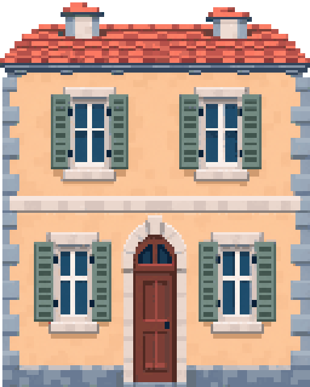
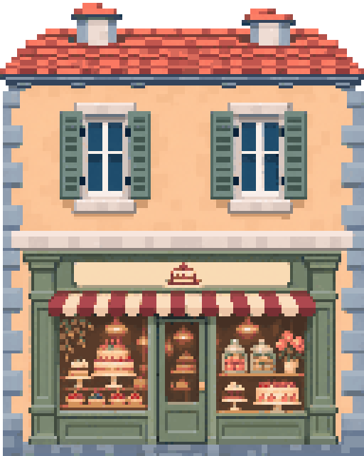
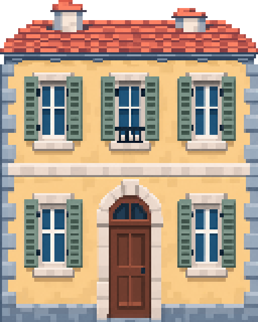
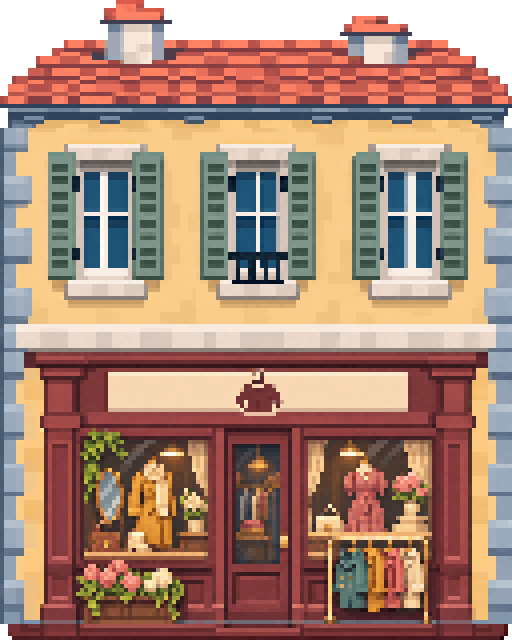

2×2 格住宅与甜品店
与原建筑共用比例：每格 256×256 px，占地 2 行 × 2 列，屋顶高出半格。两张 PNG 均为 512×640 px，透明背景。
黄虚线以上为屋顶半格；每个绘画像素为 4×4 px。

06-2x2.png · 住宅
512×640 px · 占地 2×2 格
下载住宅 PNG
09-2x2.png · 甜品店
512×640 px · 占地 2×2 格
下载商店 PNG正在核对像素对应关系…
与原有素材同格、同底线对照


统一按“序号-占地大小.png”命名，大小为占地行数 × 列数。两栋均为 2×2 格；屋顶不计入名称，图片含屋顶为 512×640 像素。